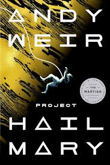

"Ryland Grace is the sole survivor on a desperate, last-chance mission—and if he fails, humanity and the earth itself will perish. Except that right now, he doesn’t know that. He can’t even remember his own name, let alone the nature of his assignment or how to complete it. All he knows is that he’s been asleep for a very, very long time. And he’s just been awakened to find himself millions of miles from home, with nothing but two corpses for company. His crewmates dead, his memories fuzzily returning, Ryland realizes that an impossible task now confronts him. Hurtling through space on this tiny ship, it’s up to him to puzzle out an impossible scientific mystery—and conquer an extinction-level threat to our species. And with the clock ticking down and the nearest human being light-years away, he’s got to do it all alone. Or does he?"
